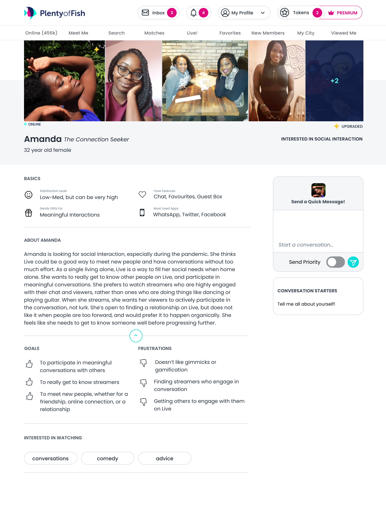
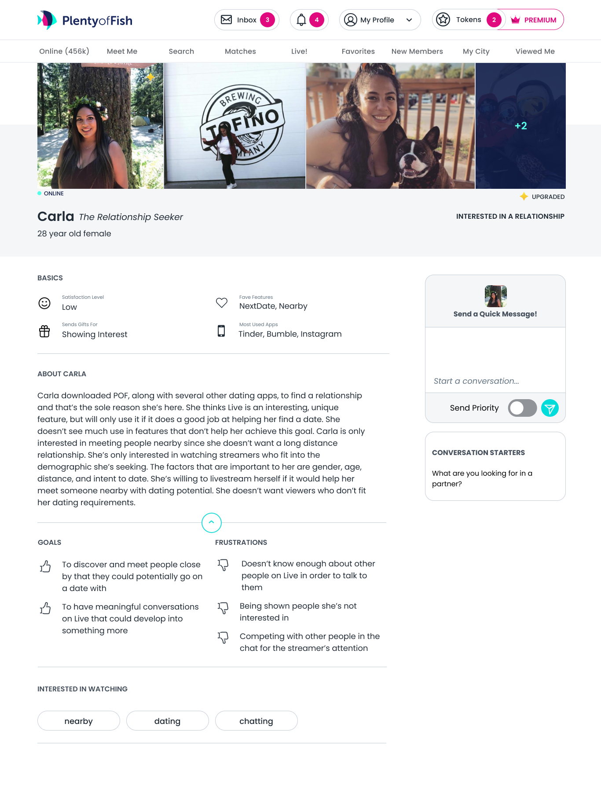
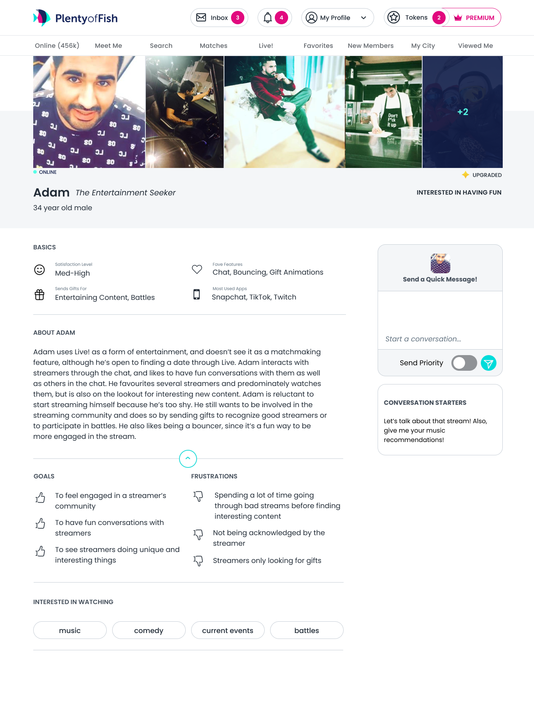

Plenty of Fish's live streaming product, POF Live!, has its own onboarding. We wanted to learn more about our users, so I conducted 24 user interviews and 11 usability tests. These personas were one of the outcomes. I made each persona to be designed like a POF profile on our website.
  